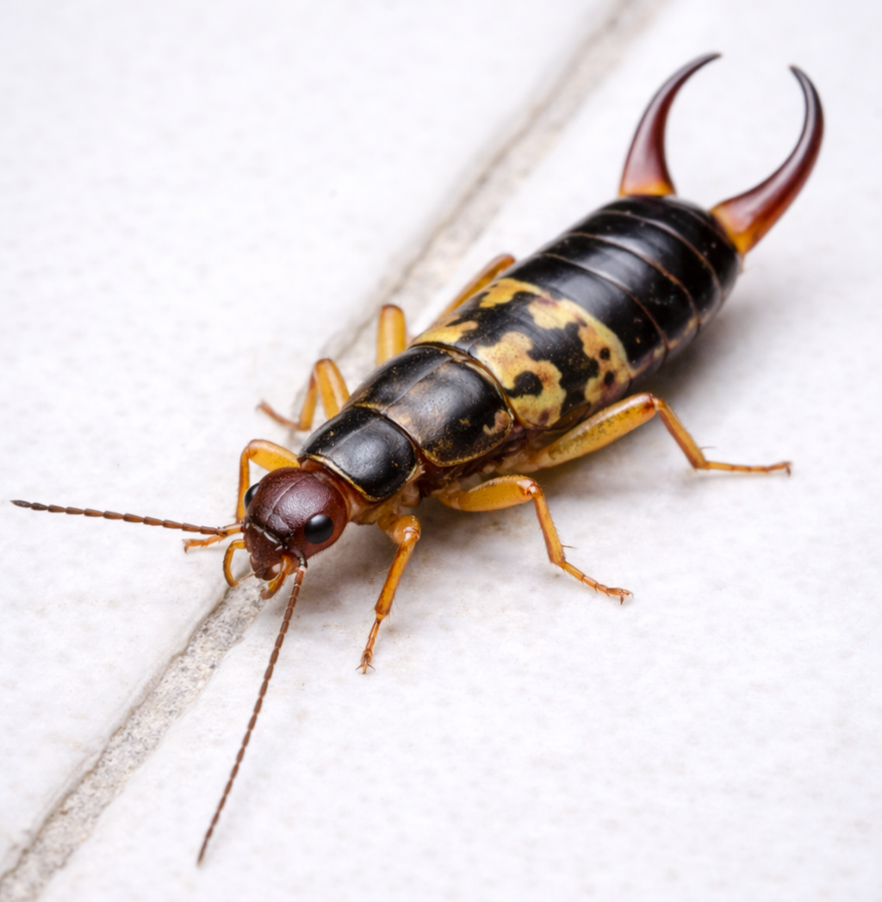

Piquijuye (Tijerilla Manchada – Doru albipes)

Descripción
Las tijerillas (earwigs) son insectos nocturnos reconocibles por sus “pinzas” al final del abdomen.
La especie Doru albipes pertenece al género Doru. 3
En Puerto Rico pueden entrar a hogares cuando hay humedad, luces exteriores y refugio cercano.
¿Son peligrosas?
- No suelen representar un riesgo sanitario como ratas o cucarachas.
- Pueden causar molestia por presencia frecuente en interiores.
- En ocasiones pueden pellizcar si se manipulan.
¿Por qué aparecen?
- Humedad alta (baños, lavanderías, áreas con filtraciones).
- Refugio en materia orgánica: hojas, mulch, madera, jardineras.
- Luces que atraen insectos (alimento) cerca de puertas/ventanas.
Prevención
- Reducir humedad y reparar filtraciones.
- Sellar rendijas y puntos de entrada.
- Retirar hojas/escombros pegados a la estructura.
- Revisar burletes de puertas y mallas.
Control profesional
El control efectivo se basa en inspección, corrección de condiciones (humedad/refugios)
y tratamiento dirigido en puntos de entrada.
En Bugs Or Us PR trabajamos con buenas prácticas y soluciones seguras,
priorizando siempre la seguridad de su familia, sus mascotas y el medio ambiente.
Solicitar Servicio Profesional
← Volver al Inicio